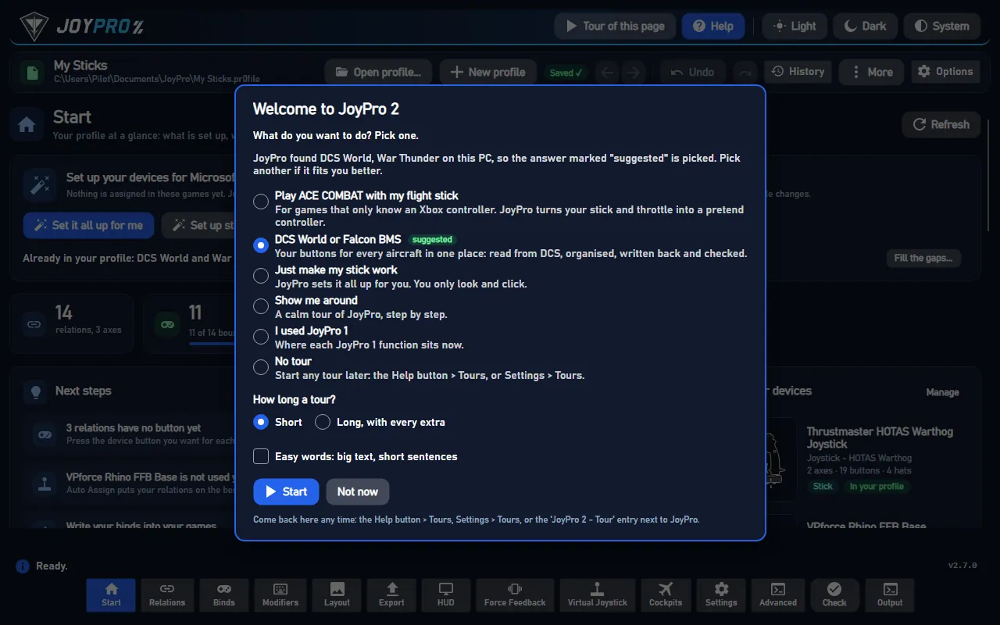

Första gången JoyPro startar letar det efter dina spel. Sedan visar det dem i ett fönster, "Dina spel". Därefter frågar en välkomstskärm vad du vill göra.
- Dina spel
kontrollera listan - Klar, och ställ in allt åt mig
eller Klar - Snabbkonfiguration
eller välkomstskärmen
#Fönstret "Dina spel"
JoyPro letar efter dina spel i några sekunder. Sedan visar ett fönster en rad per spel.


| Du ser | Vad det betyder | Vad du kan göra |
|---|---|---|
| En ikryssad rad med en mapp | JoyPro hittade spelet. | Ingenting. Kryssa ur den om du inte vill ha det i JoyPro. |
| En rad utan kryss | JoyPro hittade inte spelet. | Ingenting, om du inte har det. Har du det någon annanstans? Kryssa i det och tryck på Bläddra.... |
| Kontroller sparas i | Var spelet sparar sina kontroller. | Tryck på Bläddra... där om dina ligger någon annanstans, till exempel Saved Games\DCS.openbeta. |
Ett spel utan kryss döljs inte. När du installerar det hittar JoyPro det.
#De tre knapparna
| Knapp | Vad som händer sedan |
|---|---|
| Klar, och ställ in allt åt mig | JoyPro sparar dina spel. Sedan ställer det in din styrspak, ditt gasreglage och dina pedaler av sig självt. |
| Klar | JoyPro sparar dina spel. Sedan frågar välkomstskärmen vad du vill göra. |
| Senare | Ingenting ändras. Välkomstskärmen kommer härnäst. |
Ny i JoyPro? Tryck på Klar, och ställ in allt åt mig. Följ sedan Snabbstart: få min styrspak att fungera.
Vill du ha stor text och korta meningar? Kryssa i Enkla ord: stor text, korta meningar i det här fönstret.
Du kan öppna fönstret igen när som helst: Inställningar > Spel > Kör konfigurationen igen.
#Välkomstskärmen
Efter Klar eller Senare frågar JoyPro en gång: vad vill du göra? Det markerar svaret som passar dina spel som föreslagen.



| Svar | Vad som startar |
|---|---|
| Spela ACE COMBAT med min styrspak | Snabbkonfigurationen och låtsaskontrollen (virtuell Xbox-handkontroll). |
| DCS World eller Falcon BMS | En rundtur på DCS-sättet: import, relationer, kurvor, export, kontroll. |
| Få bara min styrspak att fungera | Snabbkonfigurationen. |
| Guida mig runt | En lugn rundtur i JoyPro, steg för steg. |
| Jag använde JoyPro 1 | Var varje funktion från JoyPro 1 finns nu. Den kan öppna din gamla profil. |
| Ingen rundtur | Ingenting. |
Tryck på Start. Inte nu stänger välkomstskärmen. Den kommer inte tillbaka av sig själv; se Enkla ord, rundturer och F1 för att få tillbaka den.
#Det finns ingen Spara-knapp
Du behöver inte skapa en profil först. JoyPro skapar en åt dig. Det sparar efter varje ändring ("Sparat" i det övre fältet). Ångra och Gör om fungerar, även efter en omstart.
#Detaljer
- Ett spel någon annanstans (en portabel installation, en annan enhet): kryssa i det och tryck på Bläddra... bredvid Installation, eller på .exe... för att välja spelets program.
- Mappen du länkar kontrolleras direkt: "Markör hittad" eller "Markör hittades inte, men mappen behålls som du valde den". Använd identifierad glömmer länken.
- Spel som sparar sina kontroller i installationen (IL-2, IL-2 Korea, IL-2 1946, Falcon BMS, X-Plane, VTOL VR med BYOJoystick) visar platsen skrivskyddad; registerspel (Nuclear Option) också.
- Ett dolt spel räknas som inte installerat överallt (exportkort, bevakning, filter, HUD ...); dina relationer för det finns kvar i profilen. Inställningar > Spel listar dolda spel med Visa igen.
- Klar, och ställ in allt åt mig besvarar välkomstfönstret med den snabba vägen: konfigurationen öppnas, och välkomstfönstret öppnas inte bredvid den.
#Kommandolistorna
JoyPro behöver varje spels lista över kommandon (deras namn och id:n). Den bygger listan en gång från din installation. Sidan Start visar ett meddelande med Bygg lista per spel eller Bygg alla saknade listor. Efter en speluppdatering säger ett kort "Spelet har uppdaterats: uppdatera dess kommandolista" med Uppdatera.
- DCS bygger den med de installerade modulerna, utan ett spelfönster. IL-2 läser tangentmappningsfilerna som spelet skriver. Andra spel läser sina egna filer (kommandolistor vid en ny installation).
- Ctrl+S sparar profilen direkt. Historik listar varje version.
#Så fungerar det inuti
- GUI:t kör
engine games installsen gång vid start (ingen avfrågning) och visar fönstret en gång (gameSetupDonei%APPDATA%\JoyPro2\ui-settings.json). Vymodell:MainWindowViewModel.GameSetup.cs, fönsterViews/GameSetupWindow.axaml. - Klar skriver allt via motorn:
engine games install set/clear,engine games config set/clear,engine games install disable/enable, och identifierar sedan igen. - Markörfilerna för en länkad mapp:
bin\DCS.exe,bin\game\Il-2.exe,X4.exe... - Identifiering per spel (
engine\GameInstalls.csoch varjeGameIntegration): Steams biblioteksmappar och app-id:n, kända installationsplatser, Windows listor över avinstallationer och appar, samt användarens egen länk, som identifieringen aldrig ersätter. - Kommandolistor:
engine db check-updatesrapporterarno-catalogför ett spel utan lista; bygget kör speletsrefresh-db(engine dcs refresh id+engine dcs refresh cleanför DCS,engine db refresh-il2,engine db refresh-starcitizen,engine <game> refresh-db) och skriver bara till%LOCALAPPDATA%\JoyPro2\GameData.
#Relaterat
- Fönstret vid första starten, varje reglage i det
- Snabbstart: få min styrspak att fungera
- Hjälpläge och rundturer